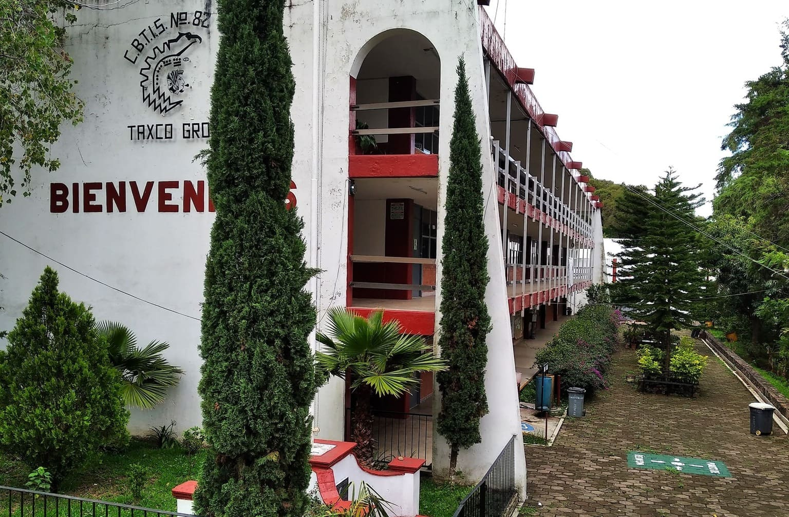
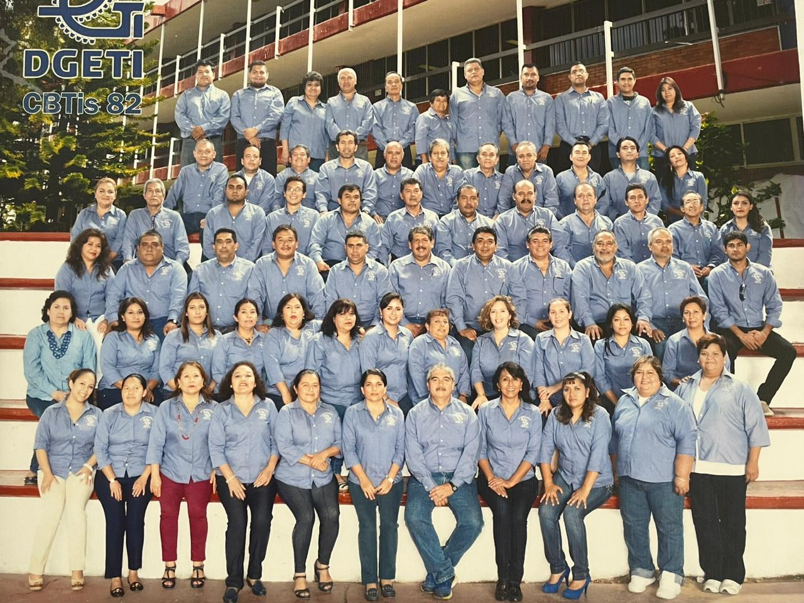
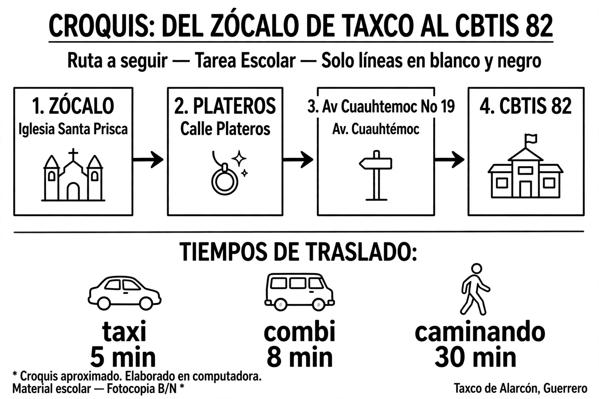

50 Años formando nuestro futuro
El Cbtis No.82 de Taxco Gro, se fundó el día 8 de octubre de 1975. En un principio era CECyT No.275 Centro de Estudios Científicos y Tecnológicos.
Se instaló provisionalmente en la casa Valentín Vidaurreta, ubicada en la calle de las Estacadas, s/n de la Ciudad Colonial de Taxco, Guerrero.
Fue gestionada por el Dr. Jaime Castejón Diez y el Dr. Antonio Ortega Figueroa logró que el Arq. Guillermo Juncal y la familia Ramírez donaran el terreno donde se encuentra actualmente en la Av. Cuauhtémoc No. 19.
El 8 de octubre a las 17:00 hrs. en los patios de la casa Valentín Vidaurreta se inauguró oficialmente.
Hoy a 50 años: Somos más de 1,200 alumnos en 6 especialidades. El Grupo 3-D orgullosamente parte de esta historia.
DATOS 2026: Fundación 8 Oct 1975 • Ubicación Montaña de Plata • Generación 3-D SOMOS • 50 Años de Historia

Edificio actual del CBTIS No.82

Plantilla docente CBTIS No.82 - Generación 2026
46 maestros comprometidos con la educación técnica
Av. Cuauhtémoc No. 19, Col. Montaña de Plata, Taxco de Alarcón

*Croquis elaborado en computadora - Tarea escolar - Ruta: Zócalo → Plateros → Av. Cuauhtémoc → CBTIS 82*
Elige una opción para continuar